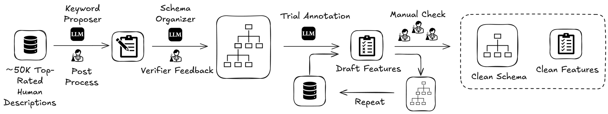
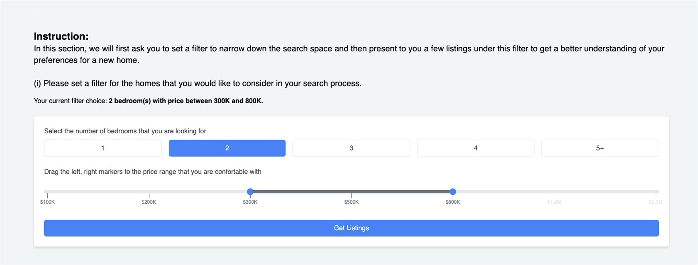
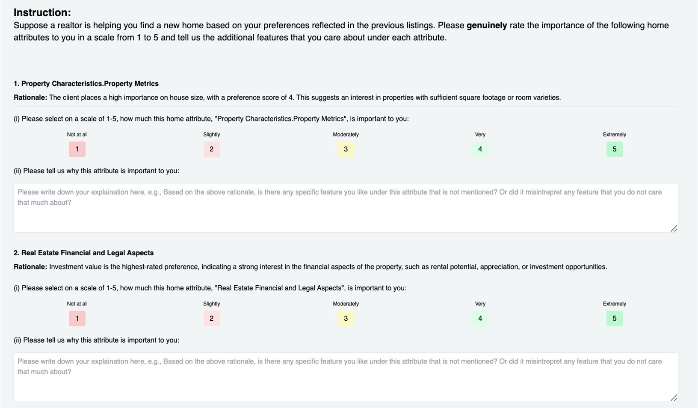

1University of Chicago, 2Stanford University, 3Carnegie Mellon
University *Equal contribution
Abstract
This paper develops an agentic framework that employs large language models (LLMs) to automate the
generation of persuasive and grounded marketing content, using real estate listing descriptions as the focal
application domain. The method is designed to align the generated content with user preferences while
highlighting useful factual attributes. The agent consists of three key modules: (1) Grounding Module,
mimicking expert human behavior to predict marketable features; (2) Personalization Module, aligning content
with user preferences; (3) Marketing Module, ensuring factual accuracy and the inclusion of localized
features. Human-subject experiments demonstrate that marketing descriptions generated by our approach are
preferred over those written by human experts by a clear margin, suggesting a promising LLM-based agentic
framework to automate large-scale targeted marketing while ensuring responsible generation using only facts.
Introduction
While large language models (LLMs) have made significant strides across various tasks, their ability to persuade
remains an underexplored frontier. This capability is particularly important since persuasion-related economic
activities underpin roughly $30\%$ of the US GDP, creating tremendous opportunities for applying LLMs across
various sectors.
This research studies language generation for grounded persuasion — a form of persuasion
inspired by Aristotle's philosophy that is grounded in fact, tailored to the audience, and adapted to contextual
factors. Using real estate marketing as a testbed, we construct a realistic evaluation environment to
measure the persuasiveness of preference-based generation.
"The faculty of observing, in any given case, the available means of persuasion." — Aristotle,
Rhetoric.
Methodology: AI Realtor Framework
Figure 1: Illustration of the Design Pipeline of AI Realtor
The AI Realtor framework automates the generation of persuasive marketing content through three key modules:
Grounding Module
This module predicts credible features for marketing by learning the attribute-feature mapping.
It transforms raw factual attributes (e.g., square footage, floor number) into marketable
features (e.g., "spacious layout", "bright room") by learning from human-written descriptions.
We constructed a high-quality feature schema and labeled dataset via a human-LLM collaborated
method (shown in the figure below) to train an
LLM that achieves $69.39\%$ testing accuracy in predicting which features should be
highlighted based on a property's attributes.

Figure 2(a): Illustration of the inductive feature schema
construction pipeline (click to enlarge)
Personalization Module
This module aligns content with user preferences by eliciting user preferences and adjusting
feature selection accordingly. Instead of relying solely on machine learning, it uses a scoring
approach that balances feature validity with user preference ratings to select the most
appropriate features to emphasize for each individual user. The user elicitation interface is
shown below.

(a) Initial Preference Elicitation
(b) Detailed Preference Selection

(c) Preference Rating Interface
Figure 2(b): User Preference Elicitation Interface
Marketing Module
Inspired by marketing research showing that buyers derive entertainment utility from surprising
effects, this module identifies and highlights features that are relatively rare compared to
surrounding properties. It determines "surprising features" based on their percentile in the
feature distribution, giving LLMs localized feature information through Retrieval Augmented
Generation (RAG). We presented one user feedback on the surprising effect below. Personal
Identification Information has been redacted.
...AI Realtor specifically points out the rarity of the
ample storage and built-in cabinetry in similarly priced listings, making the
property stand out.
Figure 2(c): RAG-Empowered AI Realtor compares similar listings to
identify surprising features.
Theoretical Framework
The research is underpinned by a micro-economic framework for automated marketing based on strategic
communication theory. Check our our paper for more details. Key components include:
Product Representation: A product $X$ is represented as an n-dimensional vector of raw
attributes $X = (X_1, X_2, \dots, X_n)$.
Signaling Features: Marketers emphasize attractive properties $S = (S_1, \cdots, S_m)$
grounded in
underlying raw attributes.
Attribute-Feature Mapping: A mapping $\pi: \mathcal{X} \to [0,1]^m$ that maps product
attributes to feature
values.
Marketing under Information Asymmetry: Revealing features to shift buyer beliefs from
initial state to a more favorable perception.
Evaluation and Results
Human Feedback Evaluation
Figure 3: Comparison of model performance using Elo ratings
Systematic evaluation through human feedback shows that AI Realtor clearly outperforms both human experts and
other model variants, measured by standard Elo ratings and win rates:
AI Realtor achieved an Elo rating of $1315-1318$, compared to $947$ for human-written descriptions
Each module enhancement progressively improved the persuasiveness of the generated content
AI Realtor-generated descriptions have higher win rates against both human-written descriptions and vanilla
LLM outputs
The human subjects in the experiment were asked to compare pairs of descriptions for the same property without
knowing which was AI-generated and which was human-written. Each participant rated which description would make
them more interested in the property, and by how much. We build a ChatArena-like interface to collect human
feedback.
Figure 4: Illustration of the inductive feature schema construction pipeline (click
to enlarge)
AI-Simulated Evaluation
(a) Shot-wise Simulation Accuracy
(b) User-wise Simulation Accuracy
(c) User Simulation Diagnostic
To explore the potential of scaling evaluation through AI simulation, the researchers employed an LLM to
simulate the responses of buyers from previous experiments:
Shot-wise Simulation Accuracy (SSA): The prediction accuracy averaged across users for each
shot
User-wise Simulation Accuracy (USA): The prediction accuracy for each user, averaged across
shots
Key findings from the AI simulation experiment:
The model achieved $61.6\%$ accuracy across users and exhibited non-trivial (> $50\%$) performance for
$79.2\%$ of
users
The variance in the USA metric was high and increased with more provided shots, highlighting challenges in
personality simulation
Error analysis attributed failures to several factors: Length Bias ($12.3\%$), Tie Comments ($19.8\%$),
Emergent
Preference ($25.3\%$), and Model Confusion ($4.3\%$)
The findings suggest potential for AI feedback but highight current limitations in reliability for
evaluation
Hallucination Checks via Fact-Checking
Figure 6: Faithfulness Scores for Different Models in Hallucination Checks
To ensure the generated content remained factually accurate, the researchers conducted fine-grained
fact-checking tests:
Two types of factual attributes were checked:
Xhard: Attributes requiring complete accuracy (e.g., number of
bathrooms)
Xsoft: Attributes allowing rough accuracy (e.g., home address)
We computed two faithfulness metrics: Faithfulhard and
Faithfulsoft to measure accuracy
AI Realtor descriptions were mostly faithful to listing information with minimal hallucination under both
metrics
Surprisingly, descriptions from human realtors and SFT models showed even higher levels of hallucination,
particularly in vague descriptions of Xhard attributes
Example of human hallucination: "This 4 bedroom, 3.5 bathroom home offers nearly 2,000 (1,828) sqft of
living space..."
AI Realtor tended to accurately describe factual attributes whenever mentioned, likely due to its preference
to copy from context
The researchers noted that it's debatable whether such vague descriptions constitute true hallucination, though
some buyers did complain about this kind of language in their responses.
Key Findings
AI-generated marketing descriptions can be more persuasive than those written by human experts
Grounding in facts while incorporating personalization and surprisal effects creates the most compelling
content
The framework can maintain factual accuracy while generating highly persuasive content
The approach demonstrated a 70% winning edge over descriptions written by expert human realtors
The study offers a practical implementation of economic theories of strategic communication in natural
language generation
Applications and Impact
This research has significant implications for:
Automated marketing across various domains beyond real estate
Personalized product descriptions at scale
Responsible AI applications in persuasive content generation
Understanding the relationship between intelligence and persuasion in AI systems